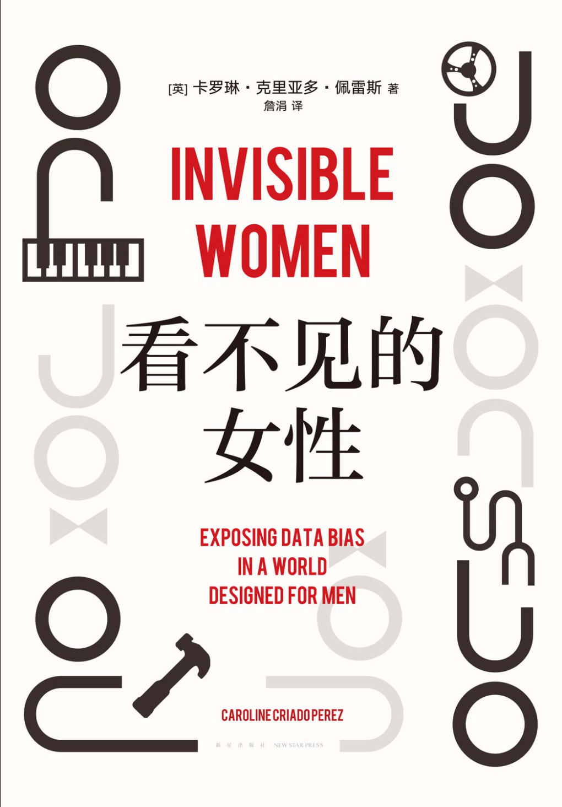
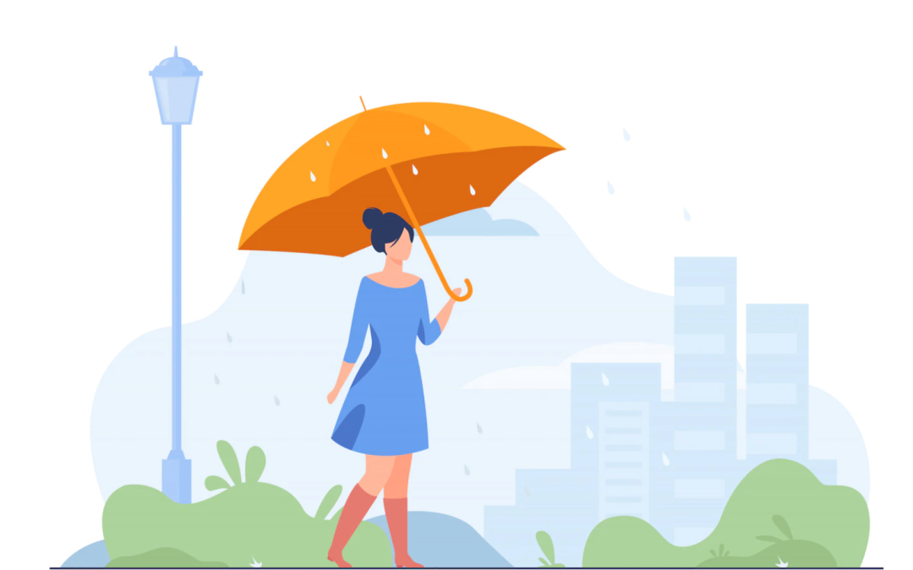
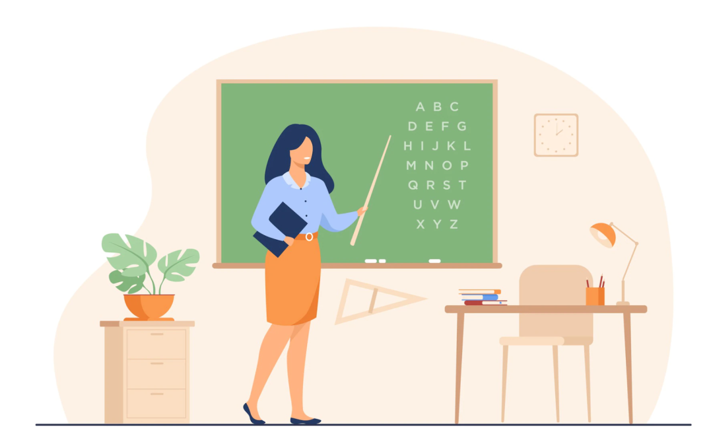
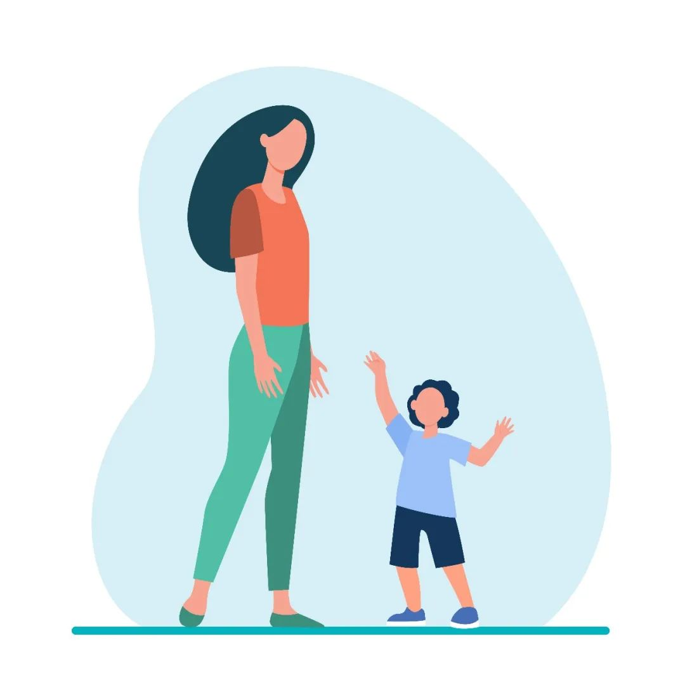
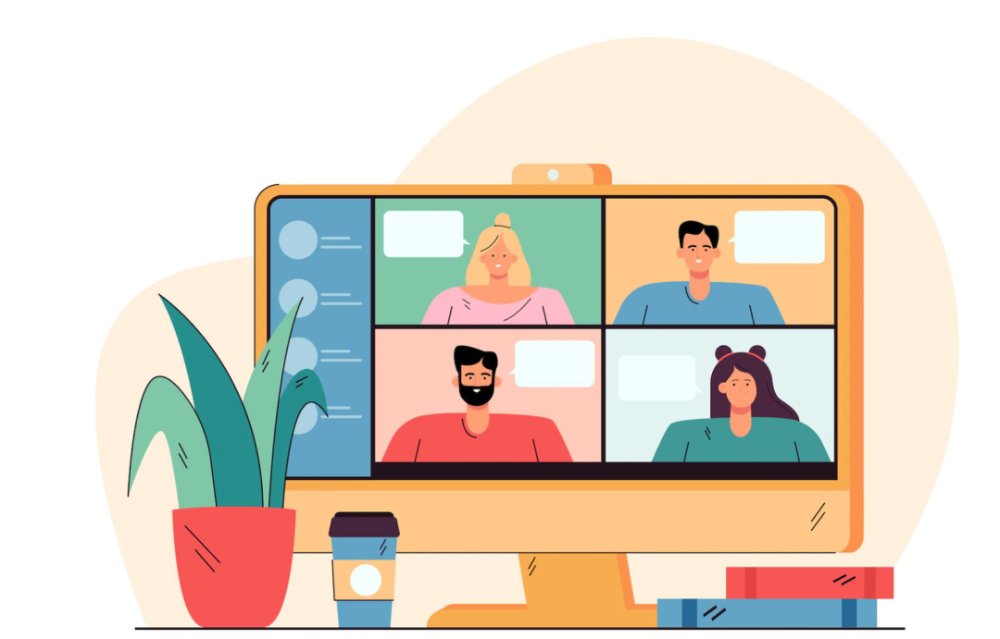
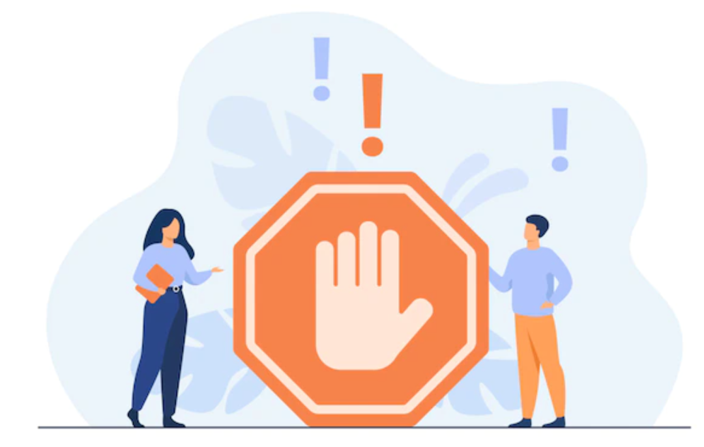
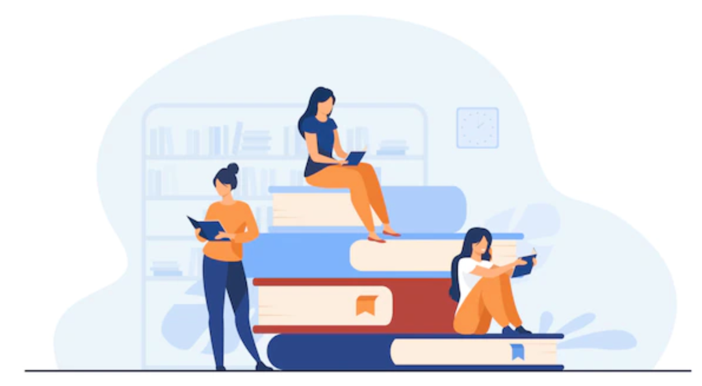

1. Introduction

Therefore, as a researcher who has long been a voice for women and vulnerable groups, British writer Caroline collated a large amount of detailed gender data, and forcefully informed the plight of contemporary women through her book nvisible Women. They may have been indifferent, looked on, scorned, but this hard evidence and the accusations are enough to awaken them to the question: Are we really equal? If equality is not yet here, we must still fight for it. Let more voices crying for help be heard, and let more missing people be seen. Just like the words on the front page of the book: “For the women who persist: keep on being bloody difficult”2. Statistics speak for themselves: the silencing, absence and marginalization of women

In Invisible Women, feminist writer Caroline Criado Perez examines the gender gap between men and women prevalently manifested in statistics. Byanalyzing data that quantifies women's experiences in households, workplaces, and communities, she reveals the gender gap in all areas of life and argues that the exclusion of women in big data only results in wasting time and money, and even the loss of lives. With statistics, the book gives many vivid examples of how women are consistently rendered invisible in life. It is fair to consider it a catalogue of long-standing gender inequality in society. Women receive less pay for work of the same value. Women take on much more of the domestic work at home. Women have to queue for a longer time to use the bathroom. Women are also overwhelmingly more likely to become victims of violent incidents. All these truths are not at all surprising now, but the book quantifies the hardships women are faced with and presents inequality against women with percentages, which makes the issue more tangible and contributes to the understanding of and the fighting against it. According to an interview with the author, the inspiration for the book took place after Caroline found out that symptoms of heart attacks are different for women and men, which she never knew. Rather, she has never been educated about it. Women never experience pain in the chest or the left arm when they suffer a heart attack. They may not even realize that they are in the middle of one. Not only women in general, but also doctors have a lack of knowledge about heart attack symptoms in women. Therefore, misdiagnosis of this cancer is 50% more likely to happen to women than to men. Since 1984, the risk of death caused by heart attacks has been significantly higher for women than for men. Just like the example detailed above, the book presents many more thought-provoking statistics and cases. For example, one-third of women in the whole world do not have access to safe toilets; urban and transport planners never take the possibility of traffic accidents occurring to women into consideration in decision making; dummy representatives of women were not used by car manufacturers in crash tests until 2011. Perhaps we are already used to women being marginalized in the fields of culture, media, politics, and films, yet as the book points out, marginalization is also present in all aspects of everyday lives, such as clinical medicine and food science, where any error could lead to severe safety hazards.
According to Caroline, as much as 75% of unpaid labor is done by women around the globe. Women work for free for 3 to 6 hours per day on average, while men only spend 30 minutes to 2 hours on tasks of the same nature. Such inequality has not been mitigated over time; rather, the proportion of unpaid work done by men remains surprisingly stable. The amount of unpaid work carried out by men and women is influenced by geopolitics, socio-politics, and class differences etc. Excluding rare exceptions, Women tend to work longer hours than men. The extra hours women work affects their mental and physical health, career development, and wealth accumulation in an insidious way. Take the division of household labor as an example. Due to gender norms and the childbearing role of the mother, women are traditionally considered to be responsible for conducting family care tasks and looking after their children and husbands, while men are associated with participation in the labor market outside the family. Beck & Beck-Gernsheim (1990) believe that this gender disparisty is a product of the industrial world and is rooted in the fundamental differences between the workplace and the home that create essential differences in the daily situation of men and women. Women's labor within the household is very often unpaid and considered to have no economic value. Therefore, they do not receive fair pay for their labor (even if husbands might give part of their income to their wives, the money is seldom associated with the value of their labor but often spent on the living expenses of the whole family and costs related to childrearing). The tasks they conduct are very often highly repetitive and mechanical with no value to individual career development. The sexual division of labor assigns disparate tasks to the two sexes. For this reason, housewives who are dependent on offering unpaid services to the family are not seen and their labor is not recognized. This may lead to the lack of a sense of individual value and achievement for these women, which exacerbates conflicts within the family.
However, these inequalities are not the result of harmful intentions. No one wants the world to be more dangerous and harsher for women. The real reason for the exitence of the gender gap is the prevailing bias that remains rooted in culture. Society has ignored the fact that women should be included in the sampling of data, causing women to be rendered invisible. However, what is absurd about the invisibility of women is that they are not members of a minority group. From the insufficiency of streetlights that increase their sense of safety to the lack of childcare facilities in the workplace, everything seems to be designed for men. How do we solve this problem? The answer given by the author is to rethink, to include women in the primary sample when collecting data, and to ask women what they really want and conduct further research. Three years have passed since the publication of the book, and its the ifnal draft was completed even earlier. For a work based on analysis of data, there are inevitable shortcomings in its timeliness and generalizability. Nevertheless, this work still has significant practical value. To this day, none of the data bias in the statistics presented in the book has changed significantly. The truth is that living in this world built for and around men as a woman is still hard. As long as the gender-related data gap is not bridged, efforts to eliminate gender equality will only scratch the surface of the problem.3. Limitations of the book: the author and controversy over transgender individuals

While Invisible Women manifests the plight of women being ignored, Carolinehas been accused of excluding women who are not cisgender in her book, e.g., bigender, transgender, and non-binary. Critics argue that the book is based on gender dualism, which divides biological and social sex into two genders: male and female. The premise of this book only discuses the neglect, exploitation, and threats against cisgender women from cisgender men. Case in point, the book criticizes the fact that women are assumed to be the same as men in data collection in all fields, ignoring the biological, social, and habitual differences between the two genders. Critics of the book also believe that Caroline has also ignored the problem of marginalized gender and sexual minorities due to socially default paradigms. Such criticism grew to accuse Caroline of being transphobic. Although Caroline did not address the issue of data collection in the transgender community in her book, opponents may not realize at first that she intentionally omitted it, until her overt disredard of trans rights on social media: she tweeted that she did not want to be referred to as a cisgender woman but as a woman. She refused to use the term "cis" in her publication because it means "non-transgender". However, Caroline has deleted most of her tweets relating to this issue, leaving readers unable to delve into the reasons for her transphobia. The case has reminded us of JK Rowling, who is also embroiled in disputes over transphobia. She triggered debates after tweeting her disapproval of the expression "those who menstruate" rather than "women" in the title of a text. She tweeted in response to the angry comments: "If sex isn’t real, there’s no same-sex attraction. If sex isn’t real, the lived reality of women globally is erased. I know and love trans people, but erasing the concept of sex removes the ability of many to meaningfully discuss their lives." Erasing the concept of sex alludes to her point that society is allowing transgender women to overstep into the spaces of [cisgender] women.
But in fact, transgender and [cisgender] women are not fighting against each other in a zero-sum game over rights. Instead, both communities are struggling for the same goal, which is to challenge the restriction on freedom of "non-cisgender straight men" under the traditional patriarchy. Caroline and JK Rowling's denial of transgender people does not solve the structural problems of patriarchy, but instead leads to mutual attacks between the transgender community and the female community.4. Conclusion

But at the very least, this book will also inspire those fighting inequality and inspire others to be more aware of gender bias. Despite the limitations of ignoring the transgender community, this book makes readers rethink the world's great flaws and its infinite possibilities. It's time for women to be seen. As Caroline says in her book, "Focusing on women's needs is not just a matter of justice, it is also a simple matter of economics." Reference： 《The Normal Chaos of Love》, Ulrich Beck, Elisabeth Beck-Gernsheim, (1990) --- - Author: 范珊玛 汤欣然 西西 潘诗雨 - Correct：张妮 - Revisors: 秦科 - Layout：缪林汐 - Translators: Jinming Zhang, Ke Yang, Xiyue Chen - Proofreader: Wiley Luan